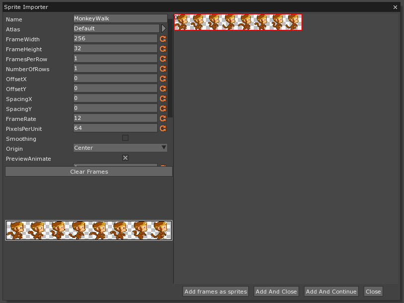
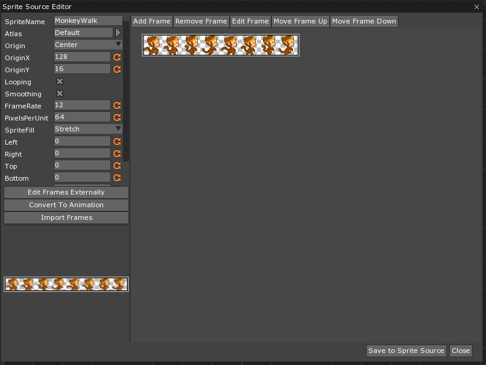
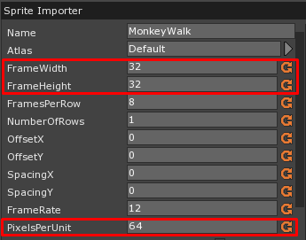
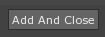
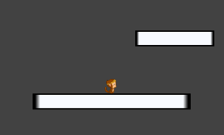
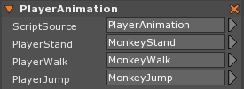

Animated Player
This lesson explains how to use animated sprites by animating the player.
Open Previous Project
Open the project created for the Using the Swept Controller lesson
Using the Player Controller
Working with the Player Controller made in the Using the Swept Controller lesson, we can easily implement animated sprites. There is no generic animation stock script because every game’s controls are different, so we will have to decide for ourselves how to trigger the animations.
Import Animations
First we will need to obtain three Animations:
MonkeyWalk.pngMonkeyStand.pngMonkeyJump.png- Browse to and select MonkeyWalk.png, MonkeyJump.png, and MonkeyStand.png
{kind=link}
{kind=link}
{kind=link}

- In the Library Window
Double-Clickthe SpriteSource tagDouble-ClickMonkeyWalk
When we Double-Click a SpriteSource it opens the sprite editor.

ClickConvert To Animation
We can see that we have 8 frames of animations from the png strip, so we can adjust the properties accordingly:
- Set the FramesPerRow to: 8
Notice now how our frame width and height do not match up with the PixelsPerUnit:

The FrameWidth and FrameHeight are recalculated when you change the FramesPerRow and NumberOfRows
If we leave the PixelsPerUnit the same, the image resolution will be at a 2:1 ratio with its size, meaning that the size of the monkey will be half as large as intended. Instead, the PixelsPerUnit should be set to match the FrameWidth and FrameHeight.
- Set PixelsPerUnit to: 32
Now you can click on the “Add And Close” button to add the whole sprite sheet as an animation.

- Repeat importation process with the two remaining sprites
Now That we have all three sprites imported, you can set the default player sprite to the monkey standing sprite.
- Select the Player object
- Under Sprite
- Set SpriteSource to: MonkeyWalk
- Under Sprite

Animation Switching via Code
Now let’s look at our current Player Controller:
function Initialize(init : CogInitializer)
{
Zero.Connect(this.Space, Events.LogicUpdate, this.OnLogicUpdate);
}
function OnLogicUpdate(event : UpdateEvent)
{
var movement = Real3(0.0, 0.0, 0.0);
// control left, right, and up
if(Zero.Keyboard.KeyIsDown(Keys.Left))
{
movement.X -= 1.0;
}
if(Zero.Keyboard.KeyIsDown(Keys.Right))
{
movement.X += 1.0;
}
if(Zero.Keyboard.KeyIsPressed(Keys.Up))
{
this.Owner.SweptController.Jump();
}
// if the jump key is not pressed, find the point of release and stop jumping
if(Zero.Keyboard.KeyIsDown(Keys.Up) == false)
{
if(this.Owner.SweptController.Jumping)
{
this.Owner.SweptController.JumpCancel();
}
}
// at the end, update
this.Owner.SweptController.Update(movement, event.Dt);
}
The first thing we can do is have the monkey flip his horizontal direction based on what Keys are pressed. We can do this by updating our left and right key checks.
- Change the PlayerController script’s OnLogicUpdate function’s first two
ifcases to the following code:
if(Zero.Keyboard.KeyIsDown(Keys.Left))
{
movement.X -= 1.0;
this.Owner.Sprite.FlipX = true;
}
if(Zero.Keyboard.KeyIsDown(Keys.Right))
{
movement.X += 1.0;
this.Owner.Sprite.FlipX = false;
}
You walk left and right, but you are always walking, even when you are jumping or not moving at all. We can improve the animations by implementing the other two states for the monkey: standing and jumping. To easily switch between sprite animations, we will make the following properties for the Player Controller.
- Add a new ZilchScript resource named: ‘PlayerAnimation’
- Implement the following properties in PlayerAnimation
[Property]
var PlayerStand : SpriteSource = null;
[Property]
var PlayerWalk : SpriteSource = null;
[Property]
var PlayerJump : SpriteSource = null;
This script will determine how each animation is triggered. The logic behind each animation is not linear like some of our previous logic. For this we will need a finite state machine. Finite state machines rely on the state itself to determine when to change states and to which state it should change. States are exclusive i.e. an object is only in one state at a time.
We have three states currently, so let’s create conditionals for each state in our OnLogicUpdate.
- Change the PlayerAnimation script to the following code:
function Initialize(init : CogInitializer)
{
Zero.Connect(this.Space, Events.LogicUpdate, this.OnLogicUpdate);
}
function OnLogicUpdate(event : UpdateEvent)
{
// standing state
if(this.Owner.Sprite.SpriteSource == this.PlayerStand)
{
}
// walking state
else if(this.Owner.Sprite.SpriteSource == this.PlayerWalk)
{
}
// jumping state
else if(this.Owner.Sprite.SpriteSource == this.PlayerJump)
{
}
}
Standing State
- When the player presses left OR right, he is now Walking
- When the player presses up, he is now Jumping
- Change the first case in the state machine to the following code:
// standing state
if(this.Owner.Sprite.SpriteSource == this.PlayerStand)
{
if(Zero.Keyboard.KeyIsDown(Keys.Left) || Zero.Keyboard.KeyIsDown(Keys.Right))
{
this.Owner.Sprite.SpriteSource = this.PlayerWalk;
}
if(Zero.Keyboard.KeyIsPressed(Keys.Up))
{
this.Owner.Sprite.SpriteSource = this.PlayerJump;
}
}
Walking State
- When left AND right are both not pressed, he is now Standing
- When the player presses up, he is now Jumping
- Change the second case in the state machine to the following code:
// walking state
else if(this.Owner.Sprite.SpriteSource == this.PlayerWalk)
{
if(Zero.Keyboard.KeyIsDown(Keys.Left) == false && Zero.Keyboard.KeyIsDown(Keys.Right) == false)
{
this.Owner.Sprite.SpriteSource = this.PlayerStand;
}
if(Zero.Keyboard.KeyIsPressed(Keys.Up))
{
this.Owner.Sprite.SpriteSource = this.PlayerJump;
}
}
Jumping State
- When the player touches the ground, he is now Standing
- Change the third case in the state machine to the following code:
// jumping state
else if(this.Owner.Sprite.SpriteSource == this.PlayerJump)
{
if(this.Owner.SweptController.Grounded)
{
this.Owner.Sprite.SpriteSource = this.PlayerStand;
}
}
In Properties Window
- Add a PlayerAnimation Component
- Under PlayerAnimation
- Set PlayerStand to: MonkeyStand
- Set PlayerWalk to: MonkeyWalk
- Set PlayerJump to: MonkeyJump
